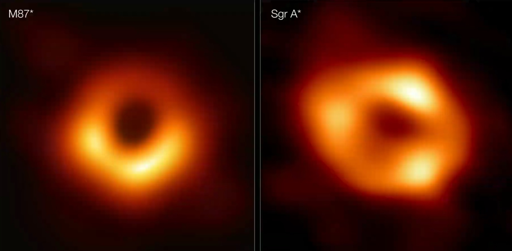

Fue identificado a finales de los años 90 por astrónomos del Instituto Max Planck de Física Extraterrestre en Garching (Alemania) y la Universidad de California, por la poderosa atracción que ejerce sobre las estrellas cercanas en la misma región del espacio, tirando de ellas a velocidades vertiginosas. Hasta ahora, el comportamiento de los cuerpos alrededor de Sagitario A* ha sido la única forma de inferir su presencia. Tanto el grupo de Genzel como el de Ghez trazaron con precisión la órbita de una estrella en particular, S2, que alcanzó la distancia más cercana a Sagitario A* en mayo de 2018 -menos de 20.000 millones de kilómetros (120 veces la distancia entre el Sol y la Tierra)-. El equipo liderado por Genzel descubrió que la luz emitida por la estrella cercana al agujero negro supermasivo se estiró a longitudes de onda más largas, un efecto conocido como desplazamiento gravitatorio, confirmando por primera vez la relatividad general de Einstein cerca de un agujero negro supermasivo. A principios de 2020, el equipo anunció que había visto el baile de S2 alrededor del agujero negro supermasivo, mostrando que su órbita tiene la forma de una roseta, un efecto llamado precesión de Schwarzschild que fue predicho por Einstein. Los astrónomos también midieron las velocidades de cuatro estrellas distantes alrededor del agujero negro. El movimiento de las estrellas indica que la masa en el centro de la galaxia está compuesta casi en su totalidad por materia de Sagitario A*, dejando poco espacio para estrellas, otros agujeros negros, polvo y gas interestelar o materia oscura.
tiene la monstruosa masa de 6.500 millones de soles. Uno de los datos descubiertos es que el brillo del agujero negro parpadea con el tiempo. Esto es probablemente como resultado de que M87* tritura y consume materia cercana atrapada en el feroz tirón de su gravedad.La materia, calentada a miles de millones de grados, se retuerce y gira a través de lo que son campos magnéticos intensos. Y mientras lo hace, la región de brillo que se ve en el anillo de gas circundante del agujero negro parece temblar.
Los dos agujeros negros se ven notablemente similares, a pesar de que el agujero negro de nuestra galaxia es más de mil veces más pequeño y menos masivo que M87. Este logro fue considerablemente más difícil que para M87, aunque Sagitario A está mucho más cerca de nosotros. El científico de EHT Chi-kwan ('CK') Chan, del Observatorio Steward y del Departamento de Astronomía y del Instituto de Ciencia de Datos de la Universidad de Arizona, explica: "El gas en las cercanías de los agujeros negros se mueve a la misma velocidad: casi tan rápido como la luz, alrededor de Sgr A y M87. Pero donde el gas tarda de días a semanas en orbitar el M87 más grande, en el Sgr A, mucho más pequeño, completa una órbita en menos minutos. Esto significa que el brillo y el patrón del gas alrededor de Sagitario A estaba cambiando rápidamente mientras la Colaboración EHT lo observaba, un poco como tratar de tomar una imagen clara de un cachorro persiguiéndose rápidamente la cola". Los científicos están particularmente emocionados de tener finalmente imágenes de dos agujeros negros de tamaños muy diferentes, lo que ofrece la oportunidad de comprender cómo se comparan y contrastan. También han comenzado a utilizar los nuevos datos para probar teorías y modelos sobre cómo se comporta el gas alrededor de los agujeros negros supermasivos. Este proceso aún no se comprende por completo, pero se cree que juega un papel clave en la formación y evolución de las galaxias.
| sagitario A | M87 |
|---|
|  |